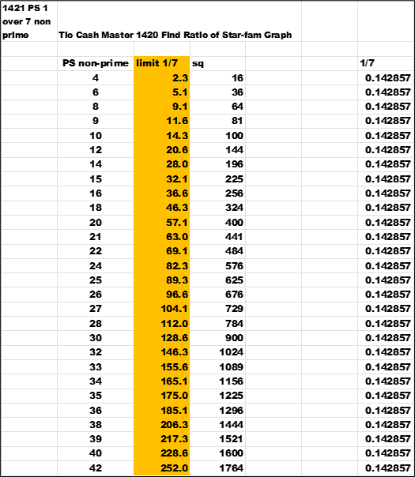
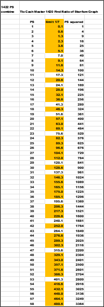
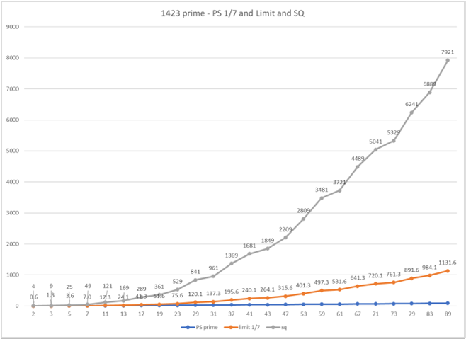
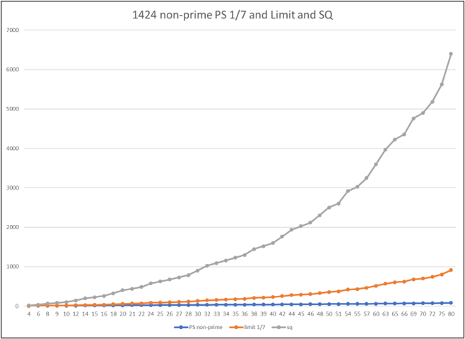
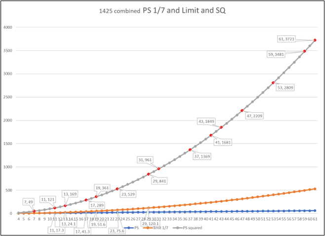
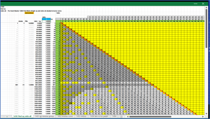

Staying with the largest *ratio of 1/7 or .0142857 that is less than 1 ; as a limit. Below are the data and some graphs. First , is a sample of prime numbers , then of non-prime , and then the combination of both. The data in the charts is a PS , then (PS * 1/7) , and PS squared (PS * PS).
The purpose is to show the function of a rail or limit of one-seventh (1/7).
Back in the prior two chapters Chapter 1300 Make 05 c Enhanced
and Chapter 1400 Find *ratio of Star-fam ;
the data showed the red square around the group (g) , then in the *ratio the solution. There are lots of pieces to the
puzzle , just some more.
Let s chart and graph the data for primes and non-primes separate and combined view for comparison. Since the square around the group (g) or any PS is PS squared (PS *PS).
What is one-seventh of the square?
Does it make a limit?
Is there another hidden pattern ?
This chart is the PS of only prime numbers. Sort in only primes calculate the square and 1/7th of the square.
This chart is the PS of only non-prime numbers. Sort in only non-primes. Same calculations as above.
This chart is the PS of both prime and non-prime numbers. The combination. Sort together all PS.
This graph is the prime numbers alone.
This graph is the non-prime numbers alone.
Here is the combination of both sets of data. The square of the prime numbers is highlighted with red markers. Also , the markers have the callout with the value of PS and the value of the square. The line of limit 1/7 has the callout of the prime and one-seventh of the square.
 next